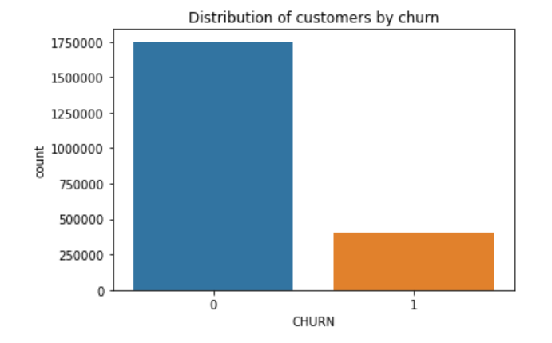

The goal of this project is to develop a predictive model that determines the likelihood of a customer to churn from a telecom company. Insights gained from this project will help the company to understand which customers are at risk of leaving so they can find ways to better serve their customers and improve customer retention.
Dataset

Dataset is obtained from Kaggle and consists of customer data of a telecom company Expresso including information on customer location, call details, subscription details, income, and billing amounts. Each row denotes a unique customer, and contains data of around 2 million customers. The raw data contains 18 independent variables and one target variable - ‘CHURN’.
Setps

Exploratory Data Analysis
The target variable has imbalanced classes - 18.7% of the customers churned, which implies that Expresso had more of loyal customers than those who churned.
This data was collected from the Senegal market. Dakar is the most popular region where the customers are from. Most of the customers have been with the company for more than 2 years.
Customers who churned were not active for more than 6 times in the course of 90 days
Data Preprocessing
For the numerical variables, missing values are imputed with mean and for categorical variables, with constant values. Multicollinearity is checked and features with VIF above 10 are dropped. Categorical and numerical features were one hot encoded and normalized, respectively. All the analyses were performing using SkLearn. Next 80:20 split is performed on the data. In the training data, the number of records of churn and non-churn customers are in an imbalanced proportion. Using SMOTE algorithm (Synthetic Minority Oversampling Technique), up-sampling will be performed to the churn customer records to create a balanced sampling. Before over-sampling is performed, the ratio churn to non-churn customers was 40:1 and after oversampling the ratio becomes 1:1.
Next, from the training dataset, the independent variables are added into a single vector column named 'features' and are added to the train and test dataset. Dependent variable column is labelled as 'Churn'.
Modeling and Performance Evaluation
Modelling is performed in Spark using pySpark ML libraries. As I am dealing with a binary classification problem here, algorithms used are Decision Tree Classifier, Gradient Boosting Classifier, Logistic Regression classifier, Random Forest Classifier. For examining the impact of scale on the quality of analysis, accuracy is selected as the evaluation criteria as the imbalanced effect is already taken into consideration using SMOTE. As the dataset had numerous independent features, Principal Component Analysis (PCA), a dimension reduction technique is used for improving the model performance. But after performing PCA, with variance 90, 95 and 99 percentages and measuring accuracy, it is found that all algorithms except Random Forest worked better without dimension reduction. So, it is decided to proceed without PCA and the entire cleaned dataset.
AWS EMR (Elastic Map Reduce) is used here which allows to launch a Spark cluster in cloud, it also allows multiple configurations such as varying nodes or changing instance type. For this project, cluster size of 2, 3 and 4 are used (M4 large with config : 8 GB quad core) to examine the performance and compare with the local environment(Memory: 8GB vCPU: 2).

After cluster size 3, time for the Spark jobs flattens. Also, the local time is almost twice as much as the time for a cluster of size 3. So, overall, cluster size 4 indicates the best performance as it takes the least amount of time as compared to the other 2 clusters. Decision tree classifier performed the best with ~ 90% accuracy and reduced time of 55 sec.
Conclusion and Recommendation
After modeling, it is found that there is no definite relationship between dataset size and accuracy. Decision Tree Classifier proves to be the most efficient model in terms of accuracy and time. Also, the server outweighed the Local in terms of time in every ML model demonstrating the power of parallel processors. Based on the insights from the analysis, Expresso should consider conducting customer micro segmentation for offering personalized incentives to the targeted customers with the highest tendency to leave. Expresso should also be proactive in addressing the customer issues, feedback and put up a customer engagement strategy for holding back any inactivity on the network